| Carlos Lampe |
Portero |
37 |
Carlos Emilio Lampe Porras (Santa Cruz de la Sierra, 17 de marzo de 1987) es un futbolista boliviano que juega como arquero en Bolívar y la selección nacional de Bolivia. |
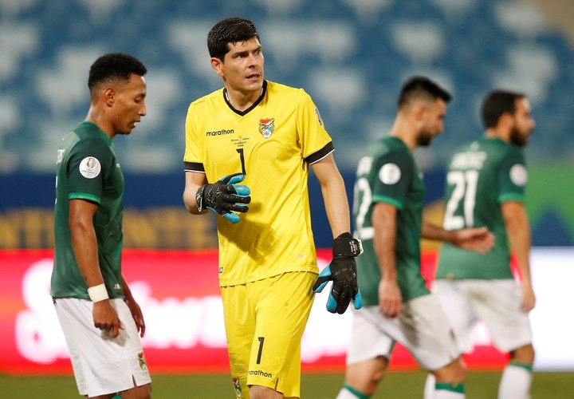 |
| Adrián Jusino Haquin |
Defensa central |
26 |
Adrián Haquin (Santa Cruz, 23 de mayo de 1998) es un futbolista boliviano que se desempeña como defensor central y ha sido parte de la selección nacional desde 2017. |
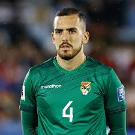 |
| José Sagredo |
Defensa lateral |
30 |
José Sagredo es un futbolista boliviano que juega como lateral en el fútbol local y ha sido convocado regularmente a la selección nacional. |
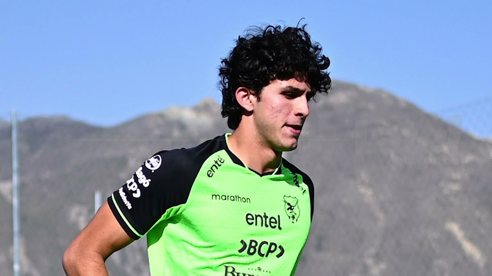 |
| Diego Medina |
Defensa |
21 |
Diego Medina es un futbolista boliviano joven que juega como defensor. Forma parte de la nueva generación de la selección de Bolivia. |
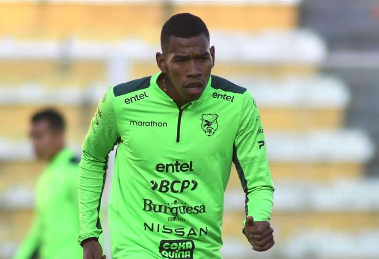 |
| Leonel Justiniano |
Mediocampista |
32 |
Leonel Justiniano Arauz (Santa Cruz, 2 de julio de 1992) es un mediocampista boliviano que juega en Bolívar y ha disputado varias ediciones de Copa América. |
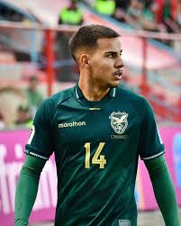 |
| Ramiro Vaca |
Mediocampista |
24 |
Ramiro Vaca Ponce (Tarija, 1 de julio de 1999) es un mediocampista creativo boliviano que juega en Bolívar y es internacional con la selección nacional. |
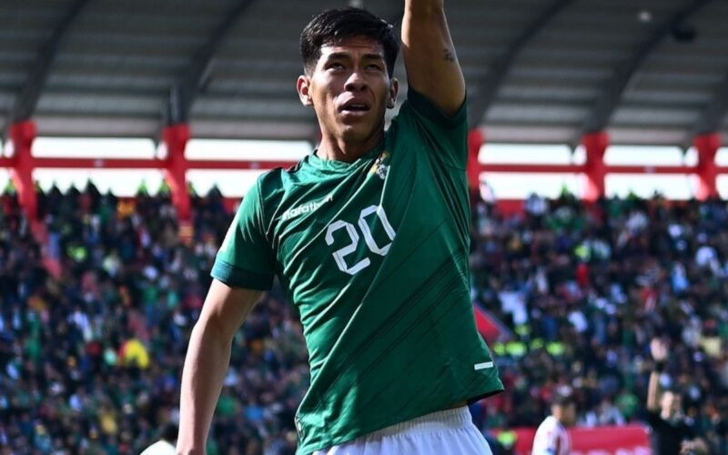 |
| Fernando Saucedo |
Mediocampista |
34 |
Fernando Saucedo es un futbolista boliviano que juega como volante mixto y es parte de la selección nacional en eliminatorias sudamericanas. |
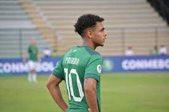 |
| Henry Vaca |
Mediocampista ofensivo |
27 |
Henry Vaca Álvarez (Santa Cruz, 23 de enero de 1997) es un mediocampista ofensivo boliviano que juega en Oriente Petrolero y en la selección nacional. |
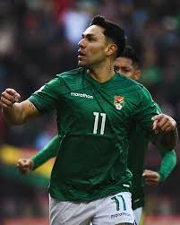 |
| Marcelo Moreno Martins |
Delantero |
37 |
Marcelo Moreno Martins (Santa Cruz de la Sierra, 18 de junio de 1987) es un futbolista boliviano histórico, máximo goleador de la selección boliviana. |
|
| Jaume Cuéllar |
Delantero |
23 |
Jaume Cuéllar Mendoza (Granollers, España, 23 de agosto de 2001) es un futbolista boliviano-español que juega como extremo o delantero. |
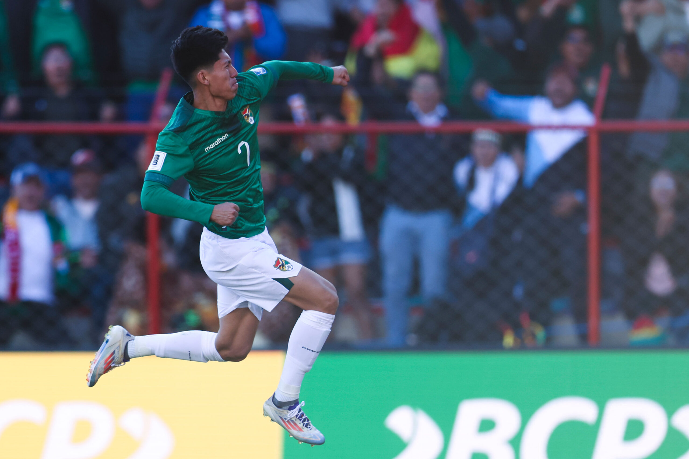 |
| Roberto Fernández |
Lateral izquierdo |
25 |
Roberto Carlos Fernández Toro (Santa Cruz, 12 de julio de 1999) es un lateral izquierdo boliviano que juega en Baltika Kaliningrado de Rusia. |
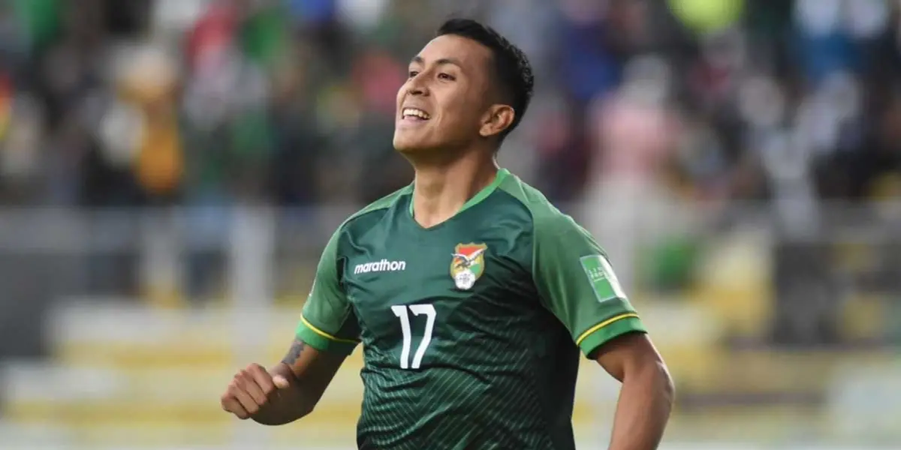 |
| Moisés Villamil |
Mediocampista |
21 |
Moisés Villamil es un joven mediocampista boliviano que integra el plantel de la selección como parte de la renovación del fútbol boliviano. |
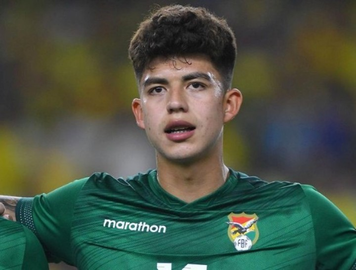 |